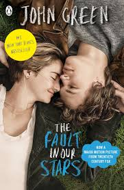
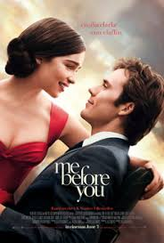

Movie time - 3 movies that I totally recomand
Posted by Jo on June 19

A beautiful Mind is a 2001 American biographical drama film based on the life of John Nash, a Nobel Laureate in Economics. The film was directed by Ron Howard, from a screenplay written by Akiva Goldsman. It was inspired by a bestselling, Pulitzer Prize-nominated 1998 book of the same name by Sylvia Nasar. The film stars Russell Crowe, along with Ed Harris, Jennifer Connelly, Paul Bettany, Adam Goldberg, Judd Hirsch, Josh Lucas, Anthony Rapp, and Christopher Plummer in supporting roles. The story begins in Nash's days as a graduate student at Princeton University. Early in the film, Nash begins to develop paranoid schizophrenia and endures delusional episodes while watching the burden his condition brings on wife Alicia and friends.

The Fault in Our Stars is a 2014 American romantic drama film directed by Josh Boone, based on the 2012 novel of the same name by John Green. The film stars Shailene Woodley and Ansel Elgort; with Laura Dern, Sam Trammell, Nat Wolff, and Willem Dafoe playing supporting roles. Woodley plays Hazel Grace Lancaster, a sixteen-year-old cancer patient who is forced by her parents to attend a support group, where she meets and subsequently falls in love with Augustus Waters, another cancer patient, played by Elgort.

Me Before You is a 2016 romantic drama film directed by Thea Sharrock in her directorial debut and adapted by English author Jojo Moyes from her 2012 novel of the same name. The film stars Emilia Clarke, Sam Claflin, Jenna Coleman, Charles Dance, Matthew Lewis, Janet McTeer, Vanessa Kirby, Joanna Lumley, and Steve Peacocke.
Set in the United Kingdom, the film is shot in various historic locations around the country, including Pembroke Castle in Wales, and Chenies Manor House in Buckinghamshire, England. Released on June 3, 2016, in North America, the film received mixed reviews and grossed $208 million worldwide.